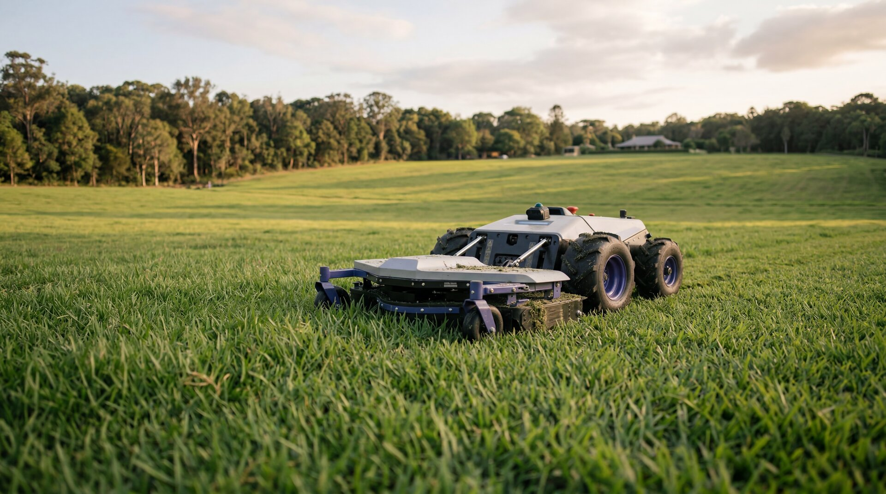

RTK robot mower installation, in technical detail
What an RTK autonomous mowing system actually consists of, what gets physically installed at your property, how the install process unfolds, and how the system holds up over years of operation. The technology depth behind the AutoAcre Buy + Manage offer.

What RTK is, and why it matters
RTK is what makes acreage automation possible. Standard consumer robot mowers rely on buried boundary wires (impractical at multi-acre scale) or single-receiver GPS (drifts metres, not centimetres). Neither approach works on a 2.5–10 acre property. RTK stands for Real-Time Kinematic positioning. It's a satellite-based positioning technique that achieves centimetre-level accuracy — about 1,000× more precise than the GPS in your phone. RTK is the same positioning technology used in surveying equipment, autonomous farm machinery, and self-driving research vehicles.
The headline number for AutoAcre's installations is 2 cm horizontal accuracy. That number isn't marketing — it's what RTK consistently delivers when the base station has clean sky view and the rover (the mower) is within around 10 km of the base. On a 2.5–10 acre acreage property, the rover is never more than a few hundred metres from its base; accuracy holds at the centimetre level continuously.
For autonomous mowing on real-world acreage, 2 cm matters. That's the precision needed to mow without missed strips, without drift over time, without straying into garden beds, and without needing a buried boundary wire to define the perimeter. Cheaper consumer-grade GPS mowers operate at 1–3 metre accuracy, which doesn't work at acreage scale.
How RTK actually works
A standard GPS receiver figures out where it is by triangulating signals from multiple satellites. The accuracy ceiling on a single receiver is about 1–3 metres because of small timing errors in the satellite signals as they pass through the atmosphere.
RTK fixes this by adding a second receiver — the base station — installed at a known fixed location on your property. Both receivers see the same atmospheric errors at the same time. The base measures the error directly (since it knows exactly where it is), then transmits a correction to the rover in real time. The rover applies the correction and resolves its own position to within 2 cm.
The whole correction loop happens at 10–20 Hz — far faster than the mower needs to make navigation decisions. The mower always knows where it is, where it's going, and where the boundaries it shouldn't cross are.
For a head-to-head comparison of RTK against the older boundary-wire approach, read RTK vs Boundary Wire →
The physical installation at your property
An RTK autonomous mowing system has four physical components that get installed on your land. Each is durable, low-maintenance, and designed to last well beyond the mower's own service life.
1. RTK base station
A small ruggedised unit (about the size of a fist) mounted on the highest practical point of your property — typically a shed roof, a pole next to the charging dock, or the eaves of an outbuilding. Needs power and clean sky view; no internet connection required since corrections are broadcast locally to the rover. Solid-state with no moving parts. Service life 10+ years on a sheltered mount.
2. Charging dock
The mower returns to its dock between mowing sessions, recharges, and waits for the next scheduled run. Dock placement matters — under shelter (garage, carport, dedicated dock-shelter), close to mains power, on level ground, and within RF range of the base station. Where no suitable existing structure works, a small purpose-built shelter is part of the install.
3. Commercial-grade autonomous mower
The mower itself: 48-inch deck, 25 acres/day capacity, 38° slope handling, 8-hour battery, fully electric drive (~60dB operating noise), GNSS receiver for RTK rover-side positioning, integrated LiDAR scanner for obstacle avoidance, collision detection, lift sensors, and onboard inertial navigation that holds track if the satellite fix drops momentarily.
4. LiDAR sensor stack (built into the mower)
A laser-based scanner mounted on the mower itself. Continuously scans the immediate environment — branches, garden hoses, sleeping pets, kids' bikes, anything new in the path. RTK is precision-blind to anything new on the property; LiDAR is what makes autonomous operation safe to leave running unattended. The sensor itself is solid-state, low-maintenance, and integrated into the mower's safety stack.
What an install day actually looks like
A typical install at a 3–7 acre property is one full day on site. The 10-acre tier sometimes spills into a second day depending on zone complexity and base station placement. The sequence is the same in either case.
Morning: base station mounting and initialisation
The base station gets mounted on the agreed location (shed, pole, eaves), wired to power, and switched on. It then runs a static observation period — typically 30 to 60 minutes — during which it observes its own position by averaging satellite signals. By the end of that observation, the base knows where it is to within centimetres and is ready to start broadcasting corrections. Mowing of the property continues uninterrupted on whatever the existing arrangement is — install does not require the property to be pre-mowed.
Midday: boundary mapping
The mower is unboxed, charged, and walked through the property with a remote control. As we walk, the rover records the boundary at centimetre-level RTK accuracy — fence lines, garden bed edges, exclusion zones around play areas, driveways, water features. Every boundary becomes a precise polygon stored on the mower. This is the step that replaces buried boundary wire — it takes hours instead of the days a wire install would take, and it can be re-walked at any time if the property changes.
Afternoon: zone configuration and first run
Mowing zones are configured: which area gets cut on which day, in what cutting pattern, at what height. Exclusion zones are confirmed. The mower runs its first supervised mowing pass while the AutoAcre installer watches — confirming RTK accuracy in operation, that the mower respects exclusion zones, and that LiDAR triggers correctly on test obstacles. By end of day, the system is operational and the property's first autonomous mow is recorded.
Day after install: first unsupervised cycle
The mower runs its first scheduled cycle without supervision the following day. AutoAcre monitors remotely. Any small adjustments — a zone boundary that needs tightening, a charging dock approach angle that needs tweaking — get applied within the first week. After that, the system runs on autopilot.
RTK accuracy doesn't drift — that's the whole point
One of the major reasons RTK was the right technology choice for AutoAcre's systems is that the accuracy is fundamentally stable over time. Unlike a buried boundary wire (which can be cut, corroded, or shifted by tree roots and erosion), or consumer-grade GPS (which can degrade as satellite geometry changes), RTK accuracy is a property of the technique itself. As long as the base station has power and clear sky view, and as long as the rover has a working GNSS receiver, the system holds 2 cm accuracy continuously.
Practical consequence: the boundary map you record on install day is still correct in year 8. No re-mapping cycles, no maintenance to the precision system, no degradation from weather or seasons. The mower's mechanical service life is the constraint; the positioning system outlasts it.
This is also why RTK installs scale gracefully if your property changes. Build a new shed, plant a new orchard row, fence off a new horse paddock — the mower can be re-walked through the new boundary in an hour and the updated map applied immediately. The base station stays where it is; only the rover-side polygons change.
What can degrade RTK
Three things that meaningfully affect RTK accuracy at acreage scale:
- Sky obstruction at the base station (e.g. a tree growing into line of sight over years). Easy fix — re-mount or trim the obstruction.
- Heavy canopy on the rover side (e.g. the mower deep under a closed-canopy macadamia or avocado section). Modern multi-constellation GNSS plus inertial dead-reckoning handles this.
- RF interference at the base. Rare in residential acreage; would typically require an industrial transmitter nearby.
In all three cases the system fails gracefully — accuracy degrades from 2 cm to decimetre-scale briefly, then recovers. The mower never gets dramatically lost.
Technical and installation questions
For the whole-system view
This page focuses on the technology and the install. For the complete view of the AutoAcre offer — Buy + Manage, ongoing operation, the management fee structure, 8-year ownership economics, and how the system fits 3, 5, 7 and 10 acre properties — start at the Acreage Solutions hub.
Property-size deep dive: 2.5–10 Acre Autonomous Systems. Local install context: Byron Bay, Bangalow.